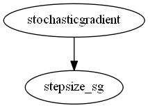

Master index
Index for manopt\solvers\stochasticgradient
Dependency Graph for manopt\solvers\stochasticgradient

Generated on Fri 08-Sep-2017 12:43:10 by
m2html
© 2005
 Master index
Master index Master index
Master index